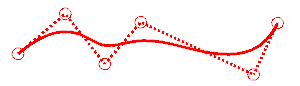
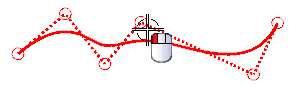
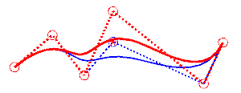
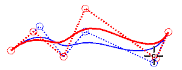

选择编辑→曲线→参数 (原有的)。
通过选择样条本身或者它的控制多边形来选择下方的样条。

可以通过移动它的极点或添加极点来更改样条形状。
点击编辑极点。
在编辑极点对话框的编辑方法列表中，确保选择的是移动极点。
从移动极点由列表中，选择增量偏置。
选择如图所示的极点。

您将让这个极点在 +YC 方向上偏置1英寸。
在 DYC 输入框中，键入1。
点击确定。
极点将移动，并且样条形状也发生变化。

在编辑极点对话框的约束列表中，选择端点斜率。
这让您可以拖动极点而不更改端点处的斜率。
拖动左数第二个以及右数第二极点到如下图所示的位置。

如您所见，控制多边形和样条的形状都发生了变化，然而，端点处的斜率没有变化。
按住 Ctrl 键并拖动任意极点。
可以看到，极点的移动比之前小很多，使用这种方法对样条的形状做微调。